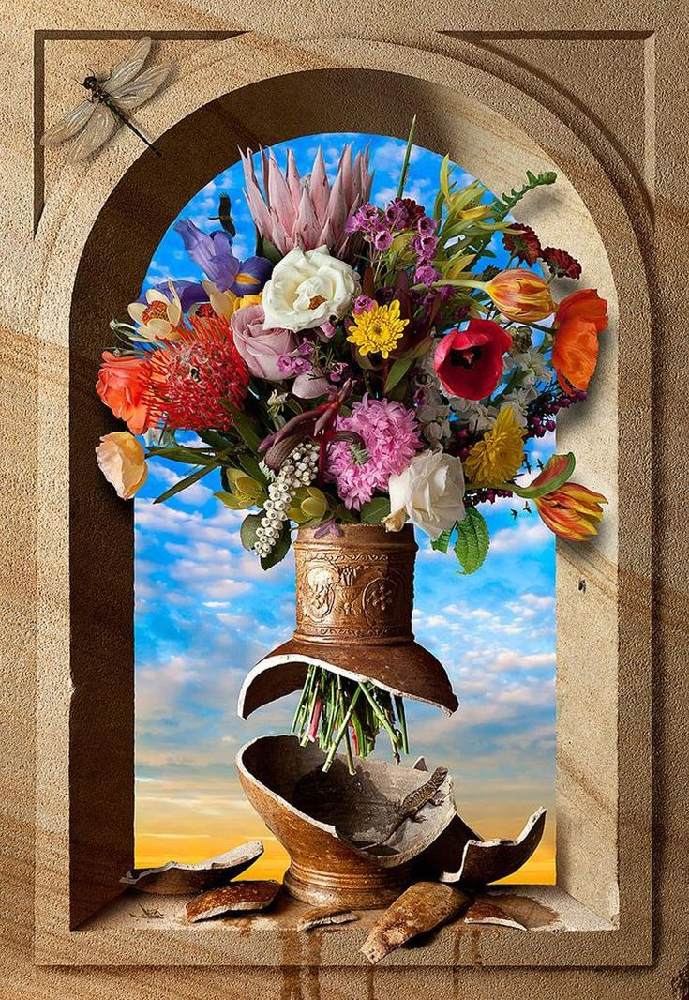
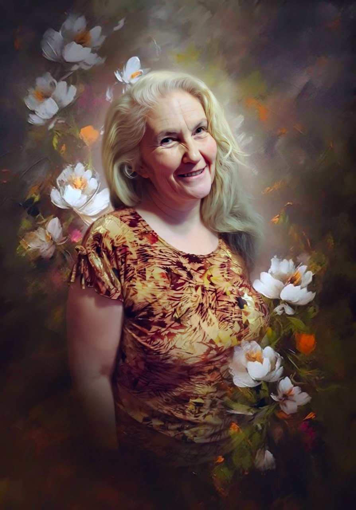

Дырявый сосуд любви

Натюрморты Кевина Беста
Она сидела у подъезда нашего дома. На лице явный след от удара рукой. Невидящий взгляд был устремлен вдаль. Губы сжаты.
— И сколько ты будешь это терпеть? — спросила я.
— Не лезь в мою жизнь. Он мужик правильный. А то, что вдарил, так сама, дура, заслужила.
— А дочка-то как между вами?
— Поймет.
— Что поймет? Ей только 5 лет.
— Поймет, что отца злить не надо. Сама с мужиками потом аккуратней будет.
Ее мысль дальше не шла. Я как-то попыталась объяснить, что сейчас не то время. Что многие живут по-другому, что можно всё изменить.
Она не стала слушать. Повторила:
— Не лезь в мою жизнь.
С тех пор я не подхожу к женщинам на улице.
Я открыла свою страничку для того, чтобы они сами, в любой момент, могли прийти ко мне. Главное, чтобы не было поздно.
Человеческую душу можно ввести в заблуждение, запутать, заставить проходить одни и те же уроки множество раз, но насильно диктовать ей выбор задачи нельзя. Она всегда только сама определяет то, что хочет прочувствовать. А исцеление приходит тогда, когда ей удается это сделать.
Когда ты поймешь для себя, что хватит, больше нельзя терпеть, напиши мне в личку слова: “Больше не терплю”, и я расскажу тебе, как поменять ситуацию.
Но вернемся к женщине на скамейке. Что она там делает? Почему она сидит там со следами удара на лице и, самое грустное, с маленькой девочкой, которая все это наблюдает? Ответ очевиден — у женщины неудачный брак, домашнее насилие и муж, с большой вероятностью, страдающий алкоголизмом. Понимает ли она степень разрушительности своих проблем? Судя по ее ответам — нет. Она не только не понимает их причин, она даже не признает наличие этих проблем. Зато эта женщина признает силовые методы общения, которые ее «правильный мужик» к ней применяет. Любой мужчина имеет право уйти от женщины, которая его не устраивает. Но ни один мужчина не имеет право ее бить. Почему она терпит? Ведь от ее сосуда любви остались лишь черепки.
Такие или похожие сценарии взаимоотношений встречаются не так уж редко. Маловероятно, что кто-то об этом мечтает. Но, тем не менее, семьи с зависимыми и домашнее насилие существуют. И «жертвы», чаще это женщины, живут так годами. Почему?
Проблема в них самих же. Дело в том, что «жертвы» — это часто люди, недолюбленные в детстве. Как следствие, их сосуд любви получает первые повреждения еще задолго до взросления. С годами целее он не становится и, когда «жертва» приходит в отношения, она либо остается в этой роли и страдает, либо сама становится провокатором проблем. Но в любом случае, в психологические травмы - трещинки ее сосуда любви - капля за каплей вытекают самые нежные и трепетные чувства, составляющие основу взаимопонимания. Отношения в таких парах становятся неудовлетворенными.
Женщина, выросшая в конфликтной обстановке, не умеет выстраивать гармоничные отношения в семье. Она постоянно ждет от мужчины чего-то такого, чего и сама порой не понимает. Партнер тем более не может понять ее желаний и капризов. Она неуверенна в себе, а следовательно, себя не любит. Дать своему партнеру полновесные и глубокие чувства у нее тоже не получается.

Ну, и «половина» ее, кстати, использующая такие способы проявления «чувств», как пощечины или оскорбления, также не обладает сосудом, полным целебной любви, способной поднять отношения на более высокий уровень. На самом деле, эта женщина, на подсознании, ожидает повтора негативного опыта своих родителей. Она же не знает, что бывает иначе.
Зачем же люди вообще идут в отношения? Ведь вокруг так много примеров последующих разочарований и фиаско. Однако это никого не останавливает. Говоря о женщинах, они мечтают о нежности и взаимопонимании, кто-то хочет моральной или материальной поддержки, кому-то важен статус и обретение материнства, ну, а кто-то идет за… ответы могут быть самые разные. То, что девочке недодали в детстве, она сегодня ищет в своем партнере.
Например, малышке не уделяли внимания, тогда сегодня она обвиняет своего партнера в том, что он не уделяет ей внимание. И даже если в действительности это не так, то ее подсознание не замечает проявления любви мужа. Её сосуд любви имеет серьезную трещину. И сколько бы он ей не уделял внимания, вытекающая из сосуда энергия будет создавать ощущение «Мне мало внимания».
Общее в каждом случае одно — вначале, когда люди видят в партнере продолжение себя, никто не думает о ссорах. Так и получается, что в семьях с присутствием зависимости /психологической, алкогольной, наркотической и тд/ вырастают дети, автоматически выстраивающие подобные отношения уже в своей семье. И именно зависимости, таким образом, становятся и причиной, и следствием тех, самых трещин и дыр, через которые утекает любовь. Замкнутый круг? Без помощи профессионала, да. Об эмоциональных трещинах, дырах и целых пробоинах своего сосуда любви многие даже не подозревают.
Так как же выглядит женщина, которая может не только любить сама, но и наполнить своего мужчину чувствами? Наполнить настолько, что он не будет иметь причины «падать» в рюмку от серости будней, уходить в туман зависимостей от непонимания или даже просто грубить своей нежной любимой. Это женщина, знающая, что такое Прощение. Не снисхождение, а чувство, наполненное Любовью, Пониманием и Принятием.
Это женщина, которая сначала исцелила свой сосуд Любви, а потом наполнила его Любовью до краев и даже более.
И тогда она стала женщиной, которая любит и уважает себя, которая понимает смысл, суть и значение истинного Служения Любви, которая переполнена Любовью, а потому способна наполнить своего мужчину этим чувством настолько, что уходить в деградацию он просто не захочет! Нет в таких семьях на то оснований.
Наоборот, он начнет относиться к ней также.
Путь Служения Любви – путь Служения друг другу. Люди начинают слушать и слышать друг друга, принимать друг друга такими, какие они есть.
Так и происходят чудеса воссоединения. Семьи восстанавливаются.
То есть для того, чтобы наладить отношения, нужно начать с себя.
Нужно только одно – правильно выбрать методику и применять техники, корректирующие привычные паттерны психических реакций и самопринятия, делать это день изо дня, поднимаясь по лестнице Духа.

Твой проводник в Любовь Тамара Шомина
13.06.2024